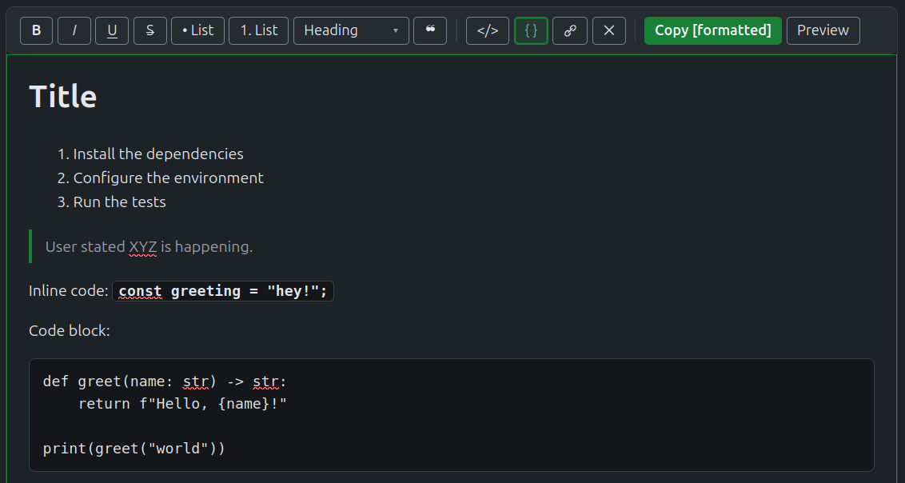
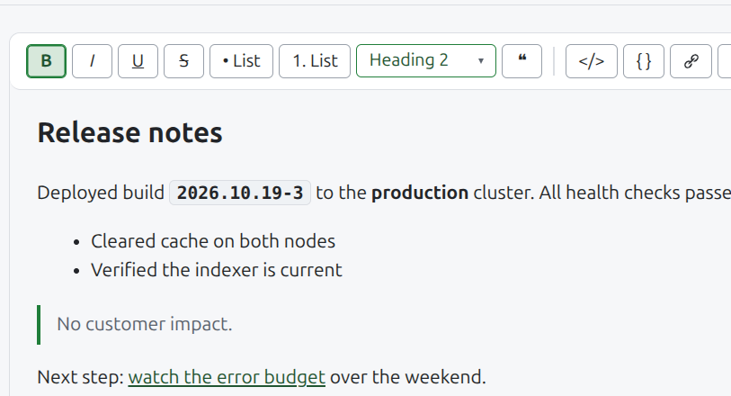
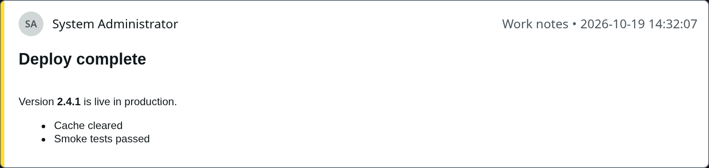

What this tool does
ServiceNow shows Work notes and Additional Comments
as plain text, but renders HTML in those fields when
it sits inside [code][/code]. This page
writes that markup for you and copies it to the
clipboard.


Supports Markdown typing and pasting, and
accepts and reformats text from Word or
OneNote.
What lands on the clipboard
Copy [formatted] (Ctrl+Alt+C) puts plain text on
the clipboard, with each formatted block inside a
visible [code] tag pair:
[code]<h2>Deploy complete</h2>[/code]
Version [code]<b>2.4.1</b>[/code] is live in production.
[code]<ul><li>Cache cleared</li><li>Smoke tests passed</li></ul>[/code]
ServiceNow renders those blocks as HTML. Preview
shows the same entry the way the journal field will
show it. Paste into Work notes or Additional
comments and post.

Preview uses the journal field's own type and
spacing, not the page's theme.